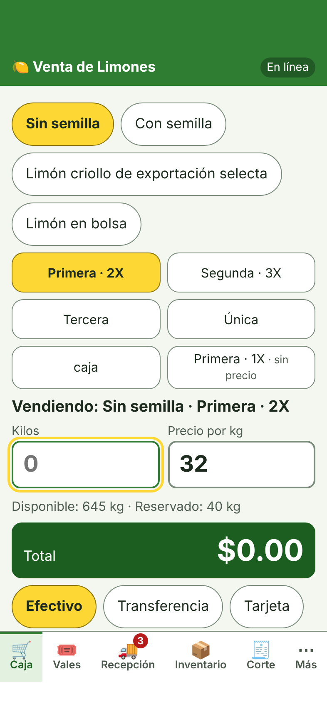
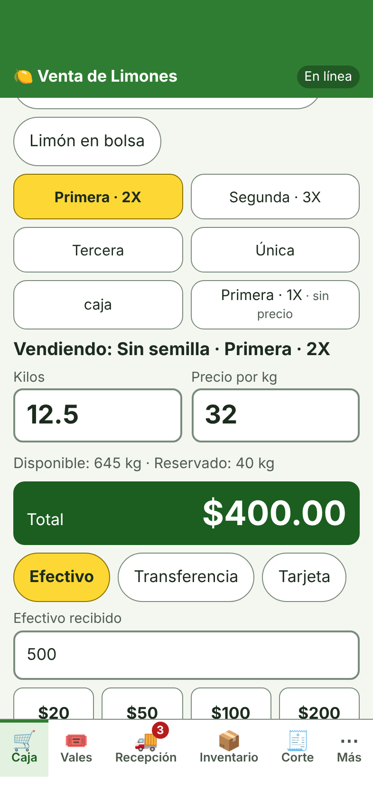
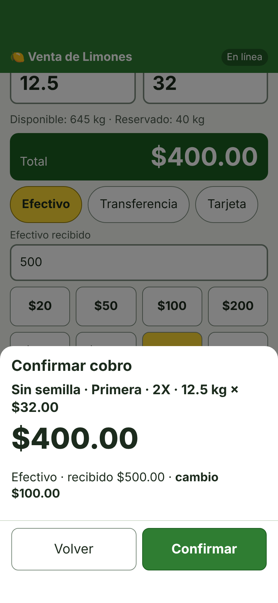
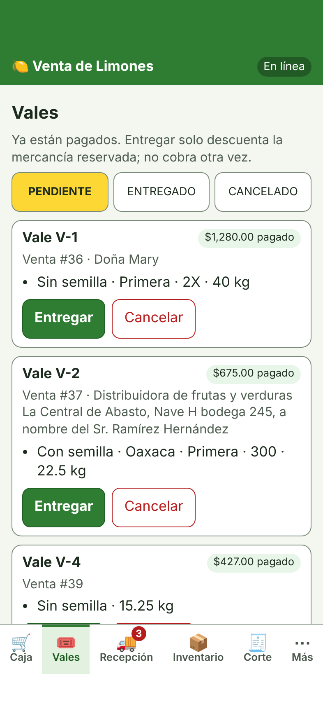
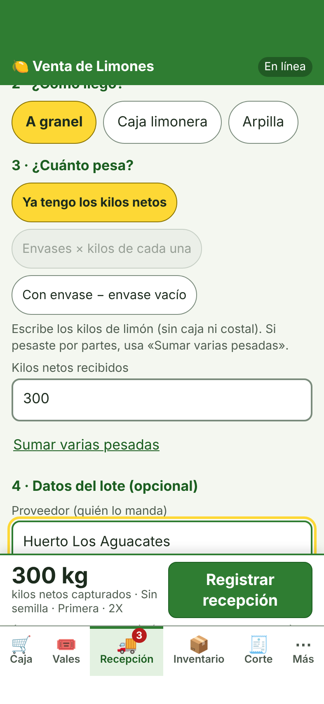
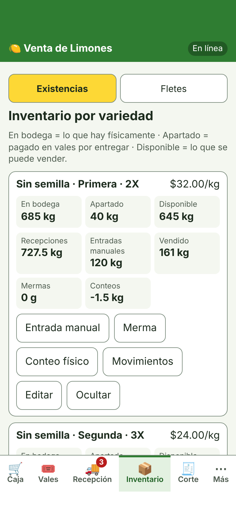
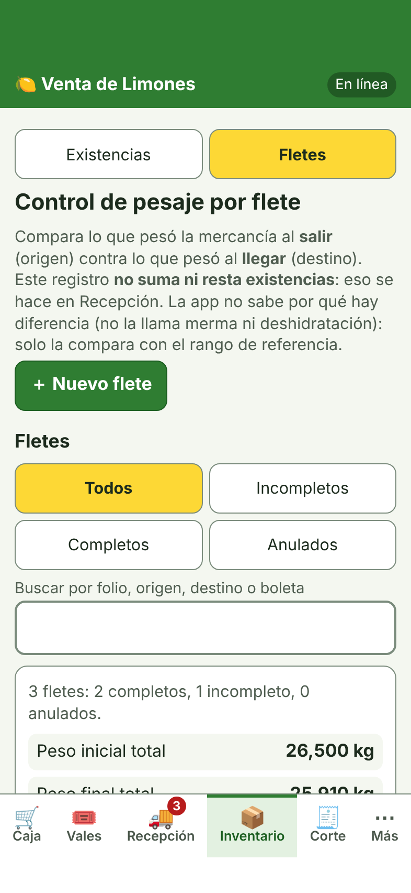
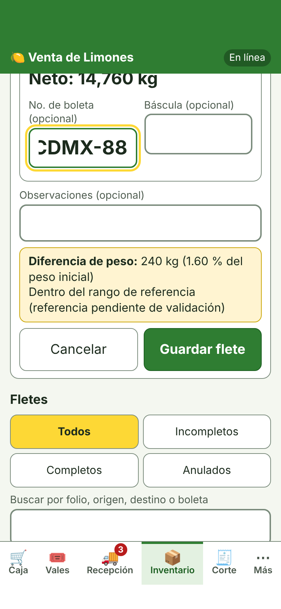
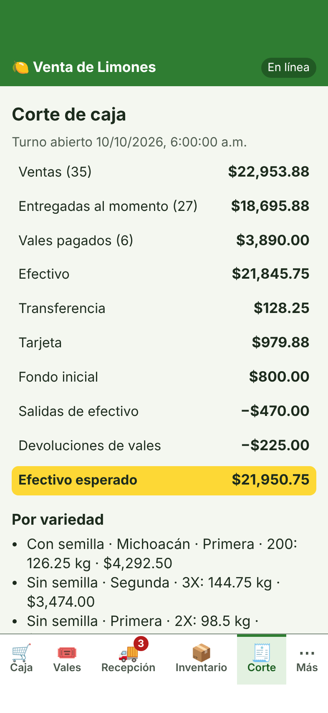
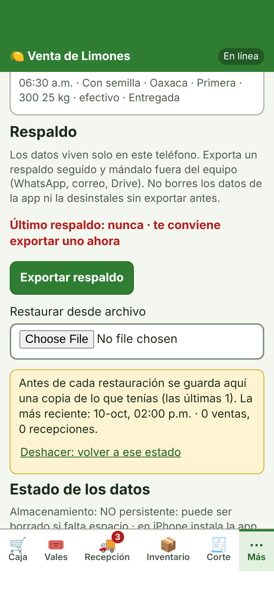

Tutorial básico: qué hace la app, cómo se usa y qué te aporta
En una frase: es una app para el teléfono que lleva la caja, el inventario y el
control de pesaje de cada flete (lo que pesó la mercancía al salir contra lo que pesó al llegar), sin papel y
con todo guardado en el propio teléfono.
Estado: versión de prueba. Se probó mucho en simulación, pero todavía no se ha
comprobado en un teléfono real. Úsala solo con datos de prueba hasta confirmar que todo cuadra con tu forma de
trabajar. Las imágenes de este documento usan datos de ejemplo (no son de ningún negocio real).
Qué te aporta
Control por flete. Cada flete queda con folio, fecha, origen, destino, boleta y báscula. La app calcula sola
la diferencia en kilos y en porcentaje entre el peso de salida y el de llegada, y la compara con un rango que tú
defines. No te dice por qué hay diferencia; te muestra cuánto y cuándo se sale de lo normal.
Caja y corte sin errores de cuenta. Total, cambio y corte del día (efectivo esperado contra el contado) se
calculan solos.
Inventario real por variedad, calidad y calibre: lo que hay, lo que está apartado por vales y lo disponible.
Vales pagados (el cliente paga hoy y recoge después) que reservan la mercancía sin cobrarla dos veces.
Rastro de correcciones. Cambiar algo ya capturado pide un motivo y queda anotado; anular no borra nada.
Pensada para funcionar sin internet y para sacar un respaldo con un toque.
1. Abrirla e instalarla
La app se abre desde una dirección web y se instala como una app más (con su ícono). Necesitas internet solo la primera vez.
Android (Chrome)
iPhone (Safari)
Abre la dirección en Chrome y espera a que cargue la Caja.
Toca el menú ⋮ y elige Instalar app.
Abre la app desde el ícono Limones.
Abre la dirección en Safari (no en Chrome ni dentro de WhatsApp).
Toca Compartir (cuadro con flecha) y elige Añadir a pantalla de inicio.
Si aparece «Abrir como app web», déjalo encendido; toca Añadir.
Abre la app desde el ícono nuevo.
Importante en iPhone: lo que captures dentro de Safari no aparece en la app instalada
(son almacenes distintos). Instálala antes de capturar datos. Para comprobar que usas la instalada: Más → Estado de los datos
debe decir «Modo: app instalada».
2. El mapa: seis pestañas
Abajo de la pantalla están siempre las seis secciones:
Pestaña
Para qué sirve
Caja
Vender: variedad, kilos, precio, billetes, cambio y cobrar.
Vales
Mercancía pagada que se entrega después.
Recepción
Registrar la mercancía que llega (suma al inventario).
Inventario
Existencias por variedad y Fletes (control de pesaje).
Corte
Cierre de caja del turno.
Más
Historial por día, respaldo y revisión de los datos.
Arriba, un indicador dice En línea o Sin internet · funciona igual.

Caja: variedad, calidad y calibre, kilos y precio
3. Primer día: prepararla
La app arranca vacía a propósito: no inventa variedades, precios ni inventario.
Variedades y precios. En la Caja da de alta cada variedad con tu precio por kilo (y, si quieres, origen,
calidad y calibre). Cada combinación tiene su propio precio e inventario.
Existencia inicial. Registra lo que ya tienes en Inventario → Existencias → Entrada, o con Recepción. Mientras no
haya existencia, la app pide autorización explícita para cada venta (no inventa inventario).
Turno de caja (opcional): en Corte abre el turno con el fondo inicial.
4. Vender (Caja)
Elige la variedad y la calidad.
Escribe los kilos; el precio por kilo ya viene y se puede cambiar.
Toca los billetes con que paga el cliente (o Exacto). La app muestra el cambio.
Toca Cobrar. Sale una hoja para confirmar antes de registrar la venta.
Pagos: efectivo, transferencia o tarjeta. Cada venta queda con folio y fecha. Si tocas dos veces seguidas, se registra una sola.
Si marcas «Vale», la venta es un vale (ver sección 5).

Total, billetes y cambio

Hoja de confirmación
5. Vales pagados
Un vale es mercancía pagada por adelantado, no fiado. Al venderlo entra el dinero una sola vez
y los kilos quedan reservados (no se pueden vender a otro).
Pendiente → Entregado: al entregar no se cobra otra vez.
Cancelado: pide un motivo y decidir si se devuelve el dinero (efectivo, transferencia o sin devolución).

Lista de vales
6. Recepción: la mercancía que llega
Cuando llega mercancía, Recepción la suma al inventario (una sola vez, aunque se toque dos veces).
Elige qué limón es (variedad, calidad, calibre).
¿Cómo llegó? A granel, en caja o en arpilla.
¿Cuánto pesa? Ya tienes los kilos netos, envases por kilos de cada uno, o peso con envase menos envase vacío.
Datos del lote (opcional): proveedor, referencia.
Registrar recepción.
Si aún no sabes el peso, puedes guardar un borrador: no suma al inventario hasta confirmarlo. La app nunca convierte cajas o arpillas en kilos por su cuenta: el peso lo captura una persona.
Recepción registra kilos, no dinero: no lleva costo de compra ni pagos a proveedores.

Registrar una recepción
7. Inventario (Existencias)
Por cada variedad ves: físico (lo que hay en bodega), reservado (apartado por vales) y
disponible (lo que se puede vender). También el detalle de lo recibido, entradas manuales, vendido y mermas, con su historial de movimientos.
Para corregir una cantidad se hace un conteo o ajuste con motivo; nada se cambia en silencio.

Existencias por variedad
8. Fletes: el control de pesaje
Está en Inventario → Fletes. Sirve para comparar, flete por flete, lo que pesó la mercancía al salir (origen) contra lo que pesó al llegar (destino).
No suma ni resta inventario (eso se hace en Recepción) y no llama a la diferencia «merma» ni «deshidratación»: la causa la decides tú.
Las cuentas
Peso neto = peso bruto − tara (o el neto directo, si solo tienes ese dato).
Diferencia = neto inicial − neto final.
Porcentaje = diferencia ÷ neto inicial × 100.
Ejemplo: sale con 22,000 kg brutos y 7,000 de tara = 15,000 kg netos. Llega con 14,760 kg netos.
Diferencia = 240 kg → 240 ÷ 15,000 × 100 = 1.60 %.
Para registrar uno
Nuevo flete. La app propone un folio libre (puedes escribir el tuyo; no se repite).
Fecha, origen y destino.
Peso inicial (origen): bruto y tara, o solo el neto; boleta y báscula como evidencia.
Peso final (destino): igual. Puede quedar para después; el flete queda «incompleto» hasta capturarlo.
Revisa la diferencia que aparece y toca Guardar flete.

Fletes: lista y totales

La diferencia se calcula sola
El rango de referencia
Al final de la lista, Rango de referencia. De fábrica es 200–300 kg y se muestra como «pendiente de validación»: es un punto de comparación,
no una regla confirmada. Se puede cambiar, marcar como validado cuando lo confirmes con tus propios datos, o no usar rango.
Si la diferencia es…
La pantalla dice
Entre el mínimo y el máximo
Dentro del rango de referencia
Menor que el mínimo / mayor que el máximo
Por debajo / por encima del rango de referencia
Negativa (llegó más de lo que salió)
El peso final es MAYOR que el inicial: revisa las boletas y el pesaje
Corregir y anular
Completar un dato que faltaba (por ejemplo el peso final) no pide motivo.
Corregir algo ya capturado pide un motivo y queda en la bitácora del flete con el valor de antes y de después.
Anular pide motivo, no borra nada y el folio queda reservado.
9. Corte de caja
El Corte resume el turno: ventas, entregadas contra vales, forma de pago, fondo inicial, salidas de efectivo (con motivo) y devoluciones.
Calcula el efectivo esperado = fondo + ventas en efectivo − salidas − devoluciones en efectivo. Al cerrar, capturas lo contado y la app muestra la diferencia.
El cambio que se da a un cliente no es un gasto.
Las cifras de la imagen son de ejemplo.

Corte de caja del turno
10. Respaldo y cuidado de tus datos
Todo vive solo en tu teléfono. No hay servidor ni cuenta. Por eso:
En Más → Exportar respaldo baja un archivo; mándalo fuera del teléfono (WhatsApp, correo, Drive). Hazlo seguido, sobre todo antes de actualizar la app.
Restaurar reemplaza todo lo que hay en el teléfono por lo del archivo. La app avisa qué se perdería, pide confirmar y guarda una copia interna por si te equivocas (Deshacer).
Auditar integridad revisa que cuentas, folios e inventario cuadren.
Si borras la app o sus datos, se pierden los datos que no hayas respaldado.

Más: respaldo y estado de los datos
11. Lo que todavía NO hace
No sincroniza entre teléfonos ni tiene usuarios o contraseñas: dos teléfonos son dos negocios separados y no sabe «quién» capturó cada cosa.
No guarda fotos de la boleta o la báscula (solo el número y el nombre como texto).
Sin impresión de tickets, sin fiado ni cobro parcial de vales, sin costos de compra ni cuentas por pagar.
El rango de 200–300 kg es una referencia sin validar.
Preguntas frecuentes
¿Funciona sin internet?
Está diseñada para eso (internet solo hace falta la primera vez). Falta confirmarlo en tu teléfono con el modo avión.
Cambié de teléfono, ¿qué hago?
Exporta un respaldo en el viejo, instala la app en el nuevo y usa Más → Restaurar desde archivo.
Me equivoqué en un flete o una venta.
Se corrige o se anula con motivo; queda anotado y nada se borra.
Salió un aviso de versión nueva.
Toca Actualizar ahora cuando termines lo que capturabas. Tus datos no se tocan.
La app se ve distinta en Safari y en el ícono.
En iPhone son dos almacenes de datos distintos. Usa siempre el ícono.
Versión de la app 0.3.0 · Documento de prueba con capturas de ejemplo.